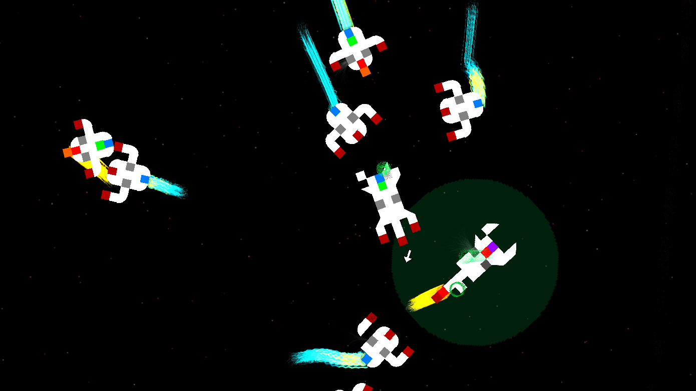
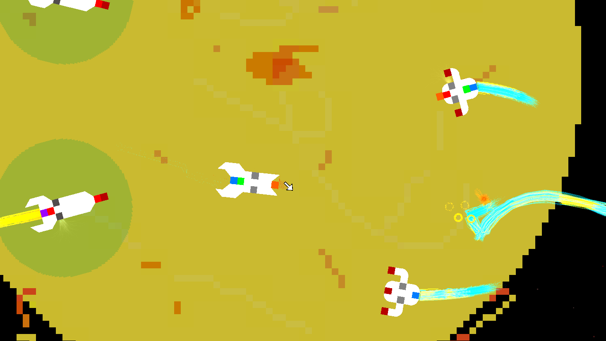
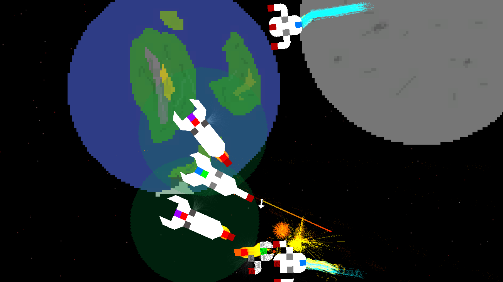

Astronomous Galactic War is the previous installment in my Astronomous series, and is another of my oldest games. This was the most popular of my games on the sneakernet, I was fortunate enough to see player strategies and custom ships built with my in-game ship builder that blew me away.
Like its sequel, Astronomous Galactic War is a space shooter game. All ships are made up of small tiles, each of which can be destroyed individually. Some tiles are tied to ship functions; For example, if your thruster tiles are destroyed, you will lose the ability to move in that direction. Tiles will slowly regenerate over time when not under fire. Once a specific percentage of tiles in a ship are destroyed, the ship will decay and be eliminated. To clear a level you must eliminate all enemy vessels. At the end of each level you gain currency based on the number of enemies you have slain. You are also given an array of allied ships at the start of the level, and if they are alive at level clear, you gain bonus currency. You can spend currency in the hub world to buy new ship presets for you and your allies. Eventually, you can purchase the custom ship builder and create your own personal designs for ships. There are several worlds and many levels to battle your way through.
Astronomous Galactic War
Spaceship battle game with destructible ship elements and ship builder.
Download For Windows


